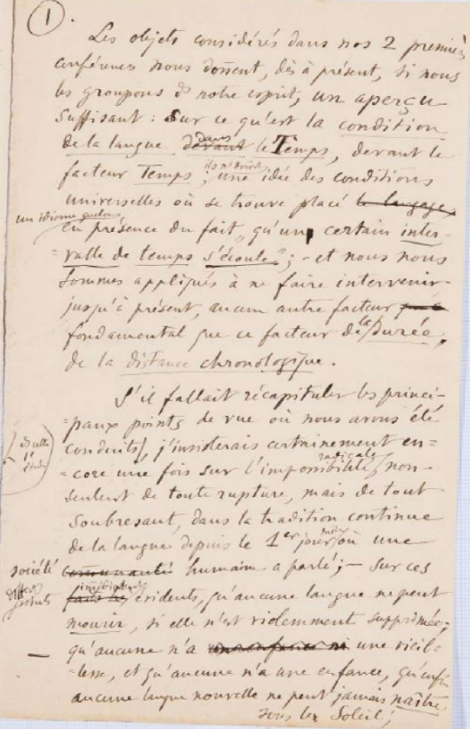
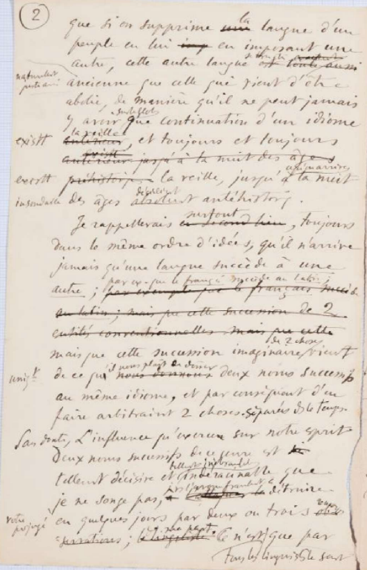

TITOLO ORIGINALE:
Trois premières conférences à l'Université (cours d'ouverture, novembre 1891)
AUTORE:
Ferdinand de Saussure
CONSERVAZIONE: questi manoscritti sono conservati presso la Biblioteca di Ginevra.
Si tratta di un'opera ad accesso libero della collezione Archives Ferdinand de Saussure
, con identificativo BGE Ms. fr. 3951/1.1-3
SUPPORTO FISICO: il supporto utilizzato sono dei
fogli di
carta
DESCRIZIONE:
Le pagine contengono tra le 25 e le 30 righe scritte a mano.
E' assente qualunque tipo di linea stampata nella pagina
STORIA: Questo manoscritto si compone di 3 parti, ognuna corrispondente a una prolusione ginevrina.
Contiene gli appunti scritti da
Ferdinand De Saussure
che vennero in parte utilizzati per le prime tre lezioni del corso di fonetica greca
e latina
del
6 novembre 1891
, del
10 novembre 1891
e del
13 novembre 1891
presso l'Università di
Ginevra
.
Probabilmente erano destinati alla pubblicazione di una brochure.
LINGUA ORIGINALE: Francese
Informazioni sulla codifica
Edizione digitale realizzata nel
giugno 2022
Testo codificato da: Lucrezia Labardi Luca Tosolini
Progetto universitario gestito da: Angelo Mario Del Grosso
LEGENDA ELEMENTI
Elementi terminologici: GIALLO
Abbreviazioni: ARANCIONE
Eventi databili: VERDE
Aggiunte: BLU
Glottonimi: MARRONE
Correzioni: (GRIGIO)
Cancellazioni
Parole ripassate
Segmenti spostati: {...}
Ripetizioni: [...]
Prima pagina

Trascrizione francese
1.
Les objets considérés dans nos
[2]
deux
premières
conférences nous donnent, dès à présent, si nous
les groupons
[ds]
dans
notre esprit, un aperçu
suffisant: sur ce qu'est la condition de la langue
dansdevant
le Temps, devant le
facteurTemps;
ils
[ns]
nous
donnent
une idée des conditions
universelles où se trouve placé le langage, un idiome
[quelc]
quelconque
en présence du fait
"qu'un
certain inter
- valle de temps s'écoule" ;
- et nous nous
sommes appliqué à ne faire intervenir,
jusqu'à présent, aucun autre
facteur fondamental que ce facteur
de la durée,
de la distance chronologique .
S'il fallait récapituler les princi
-
paux points de vue où nous avons été
conduits
[ds]
dans
cette
[1°]
première
étude
,j'insisterais certainement en
-
core une fois sur l'impossibilité radicale
, non -
seulement de toute rupture, mais de tout
soubresaut, dans la tradition continue
de la langue depuis le
[1er]
premier jour
même où une
société humaine
a parlé;
- sur ces
[diffent]
différents
points
faits
immédiatement
évidents, qu'aucune langue
(nepeut)
ne peut
mourir
, si elle n'est violemment supprimée;
-
qu'aucune n'a
une vieil
-
lesse
, et qu'aucune n'a une enfance
, qu'enfin
aucune langue nouvelle ne peut jamais
naître
sous le
(S)
soleil;
Traduzione in italiano
Gli oggetti considerati nelle nostre due prime conferenze ci offrono, fin da ora,
se li mettiamo insieme nella nostra mente, un panorama sufficiente
di ciò che è la condizione della lingua nel Tempo, davanti al fattore Tempo;
essi ci danno un'idea delle condizioni universali in cui si trova posto un idioma
qualunque in presenza del fatto “che un certo
intervallo di tempo trascorre” – e noi ci siamo applicati a non fare intervenire,
fino ad ora, nessun altro fattore fondamentale oltre al fattore della
durata, della distanza cronologica.
Se si dovessero ricapitolare le principali prospettive da cui ci siamo mossi in questo
primo studio, insisterei certamente ancora una volta sull'impossibilità radicale,
non solamente di ogni
rottura, ma di ogni salto, nella tradizione continua della lingua dal primo giorno
in cui una società umana ha parlato;
su questi diversi punti immediatamente evidenti, che nessuna lingua può
morire, se non è soppressa violentemente;
che nessuna ha una vecchiaia, e nessuna ha un'infanzia, che infine nessuna lingua
nuova può mai nascere sotto il sole;
Seconda pagina

Trascrizione francese
2
que si on supprime la unelangue d'un
peuple en lui
en imposant une
autre, cette autre langue se trouve être est toute aussi naturellement
juste aussi
ancienne que celle qui vient d'être
abolie, de manière qu'il ne peut jamais
y avoir
(surleglobe)
sur le globe
que continuation
d'un idiome
[existt]
existanta veillel anterieur
, et toujours
[et toujours]
anterieur existtexistant jusqu'à la nuit des ajes existant prehistoriques
la veille, jusqu'à qu'on arrive à la nuit
insondable
des âges décidémentantéhistoriques.
Je rappellerais en le comd himsurtout,
(T)
toujours
dans le même ordre d'idées, qu'il n'arrive
jamais qu'une
langue succède à une autre;
par
[ex.]
exemple
que le français
succède au latin; par exemple que le francais succède au latin; mais que cette succession de
2 entitès conventionelles mais que cette
mais que cette succession imaginaire
de
[2]
deux
choses vient
[uniq=t]
uniquement
de ce qu
nous donnons 'il nous plaît de donner
deux noms successifs
au même idiome, et par conséquent d'en
faire
(arbitraint)
arbitrairement
[2]
deux
choses.
séparées
[ds]
dans
le temps.
Sans doute,
(L)
l'influence
qu'
(exerce)
exercent
sur notre esprit
deux noms successifs de ce genre
est
tellement décisive et
tellement
(tellemn)
inébranlable,
indéracinable, que
je ne songe pas,
je
[vs]
vous
l'avoue franchement, à
détruire
votre préjugé
en quelques jours par deux ou trois
remarques
- ;
le linguiste ma part.Ce n'est
{
(T)
tous
les linguistes
le savent
}
que par
Ttous
les linguistes
le savent
Traduzione in italiano
che se si sopprime la lingua di un popolo imponendogliene un'altra, quest'ultima si
trova ad essere, naturalmente, altrettanto antica di
quella che è appena stata abolita, in modo che non può mai esserci sul pianeta che
continuazione di una lingua esistente il giorno prima, e sempre esistente il
giorno prima, fino a dove arriva la notte insondabile delle età assolutamente preistoriche.
Ricorderò soprattutto, sempre nello stesso ordine di idee, che non succede mai che
una lingua succeda a un'altra;
per esempio che il francese succeda al latino;
ma che questa successione immaginaria di due cose viene unicamente dal fatto che ci
aggrada dare due nomi successivi allo stesso
idioma, e di conseguenza di farne arbitrariamente due cose separate nel tempo.
Senza dubbio, l'influenza che esercitano sulla nostra mente due nomi successivi di
questo genere è talmente decisiva e talmente irremovibile,
inestirpabile, che non ho la minima aspettativa nemmeno, ve lo confesso con franchezza,
di distruggere il vostro pregiudizio in qualche giorno
con due o tre osservazioni mie.
È solo – tutti i linguisti lo sanno – attraverso l'osservazione particolarmente prolungata
di ciò che la lingua è di
testo in testo, di cinquant'anni in cinquant'anni, o di vent'anni in vent'anni, che
si arriva finalmente a
convincersi profondamente, definitivamente, dell'assoluta vanità e inanità di una
denominazione
differente come latino o francese.
Parole chiave
OGGETTO: l'argomento, che sia una persona o una cosa, concreta o astratta, di cui
si parla.
CONDIZIONE: situazione, natura o stato d'essere di una certa cosa.
LA LINGUA NEL TEMPO: studio e la valutazione dei fatti linguistici considerati secondo
il loro divenire nel tempo.
FATTORE: elemento che può esercitare un’azione positiva o negativa sulla condotta
di una serie di azioni.
TEMPO: intuizione e rappresentazione della modalità con cui i singoli eventi si susseguono
e sono in rapporto l’uno con l’altro
IDEA: ogni singolo contenuto del pensiero, ogni entità mentale, e più in particolare,
la rappresentazione di un oggetto alla mente, la nozione che la mente si forma o riceve
di una cosa reale o immaginaria.
CONDIZIONI UNIVERSALI: condizione generali, condivise da tutti.
IDIOMA: lingua propria di una nazione. In particolare, in linguistica, il conglomerato
di sistemi che coesistono nell'ambito di una data comunità storico-sociologica.
FONDAMENTALE: che costituisce il fondamento, la base di qualche cosa, o serve di sostegno.
DURATA: intervallo di tempo in cui si svolge, dal suo principio alla sua fine, un
determinato fatto o fenomeno.
DISTANZA CRONOLOGICA: distanza temporale tra due eventi.
LINGUA: il sistema o la forma storicamente determinata attraverso il quale gli appartenenti
a una comunità si esprimono e comunicano tra loro attraverso l'uso di un determinato
linguaggio, ovvero un insieme di segni scritti (simboli) e/o parlati (suoni).
SUCCESSIONE: il succedere ad altri, cioè il subentrare, il prendere il posto (in questo
caso) di un'altra lingua.
COSE: il nome più indeterminato e più comprensivo, col quale si indica, in modo generico,
tutto quanto esiste, nella realtà o nell'immaginazione, di concreto o di astratto,
di materiale o d'ideale.
ARBITRARIAMENTE: in modo arbitrario, di propria iniziativa, senza autorizzazione.
LINGUISTI: coloro che si dedicano allo studio delle lingue (o anche soltanto, o in
modo specifico, della propria lingua), soprattutto da un punto di vista teorico, sistematico
e storico.
TRADIZIONE CONTINUA DELLA LINGUA: elementi di una lingua precedente che rimangono
all'interno della lingua successiva.
PROSPETTIVE: i punti di vista, in questo caso il modo soggettivo di vedere i fatti,
le situazioni e i problemi, e quindi di valutarli.
STUDIO: ricerca, indagine approfondita su un argomento specifico, che può essere ad
esempio una lingua.
RADICALE: che agisce in profondità e influisce in modo sostanziale.
SOCIETA' UMANA: l'insieme degli uomini organizzato sulla base di un sistema più o
meno strutturato di rapporti naturali, economici, culturali o politici.
PARLARE: pronunciare suoni articolati, dire delle parole, o in senso più ampio esprimere
pensieri e sentimenti per mezzo del linguaggio.
NOME: appellativo che designa una data entità.
MENTE: il complesso delle facoltà umane che più specificamente si riferiscono al pensiero,
e in particolare quelle intellettive, percettive, mnemoniche, intuitive e volitive.
MORIRE: nel caso della lingua, cessare di esistere, uscire dall’uso, estinguersi.
VECCHIAIA: età più avanzata segnata da un progressivo indebolimento.
INFANZIA: i tempi iniziali di uno sviluppo, della formazione di qualcosa.
NASCERE: avere inizio, avere origine, per una lingua iniziare ad essere utilizzata
e riconosciuta.
POPOLO: complesso degli individui di uno stesso paese che hanno in comune origine,
lingua, tradizioni, istituti, leggi e ordinamenti.
NATURALMENTE: istintivamente, secondo natura.
PREISTORICO: antichissimo, appartenente all'inizio dei tempi.
CONTINUAZIONE: la prosecuzione di quanto precede e già esiste.
Bibliografia
Trascrizione francese del manoscritto :
Écrits de linguistique générale,
Ferdinand
de Saussure
,
Simon
Bouquet
,
Rudolf
Engler
,
Antoinette
Weil
,
Paris,
Gallimard,
2002.
Trascrizione italiana del manoscritto :
Lingua e mente sociale,
Per una teoria delle istituzioni linguistiche a partire da Saussure e Mead,
Emanuele
Fadda
,
Acireale - Roma,
Bonanno Editore,
2006.